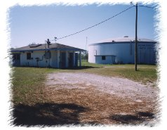
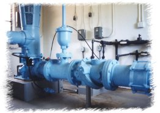
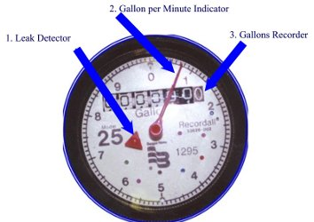

Frequently Asked QuestionsQ. Where does our water come from? A. Our water comes from four ground water wells, which draw water from the Floridan Aquifer.  The Peach Orchard Water Treatment Plant supplies about 85% of the water produced by HSWD. On site the District operates two wells and a one million gallon ground storage tank. The Plant site is located at 4900 W. Grover Cleveland Boulevard . The remaining 15% of the water we supply comes from the Norin Water Treatment Plant, located at 6249 W. Grover Cleveland Boulevard and the Bradshaw Water Treatment Plant located at 8501 Bradshaw Street. Q. Why does my bill vary from month to month, when I feel that I am constant in the way I use water? A. HSWD tries to read the meter in the system the around the third Wednesday of each month and as close to the 23rd of the month as possible. This can vary the amount of days between readings from 28 days to 35 days. Q. How do I read the meter and where is it located?  A. The meter is usually located on the street right of way at one of the property lines of your property. The readings are taken each month from the gallons recorder (#3 on the above illustration). Finding the gallons used since the last reading is simply a matter of subtracting the previous reading from the current reading. The meter in the illustration has a stationary zero. It takes one complete rotation of the gallon per minute indicator (#2 ) to register 10 gallons of usage on the gallons recorder. Q. How do I know if I have a leak in my household plumbing? A. An important feature of the meter is the leak indicator (#1). If there is any water going through the meter the red triangle will be turning. It is a good idea to periodically check your plumbing for leaks by turning off all water taps inside and outside of your home and watch this leak detector carefully for about 5 minutes. If the detector does not move for this period you should be leak free. Q. What should I do if a leak is indicated? A. Systematically try to locate the leak by isolation. If you have a shut off valve on the supply line coming into your home, shut it off and check the leak indicator on the meter. If the red triangle stops moving, then the leak is located somewhere within the home. If the red triangle is still moving it means you have a leak on your water line between the meter and the house shut off valve. Most hidden leaks inside homes are located in the toilet(s). Shut off the valve that supplies the toilet and recheck the leak indicator on the meter. You can also obtain dye tablets from the District office that are useful in finding leaking toilets. Just drop them in the tank and wait about a half an hour to see if any dye shows up in the bowl. |